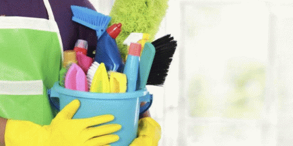

Demographics
The target audience for EcoLiving Solutions includes individuals and families aged 25-55 years, typically located in urban or suburban areas. They are generally well-educated and belong to middle to upper-middle-income groups. Many of them are home or business owners who are looking to integrate sustainable practices into their daily lives. They may work in professional fields or own small businesses.
Behaviors & Habits
This group is highly environmentally conscious and likely to follow eco-friendly blogs, influencers, and sustainability-focused communities. They adopt green habits like reducing waste, using energy-efficient products, and making informed decisions about their purchases. They are tech-savvy, using the internet to research sustainable living practices, eco-friendly products, and green services.
User Needs
The target audience needs clear, accessible information about sustainable practices and services. They value educational content, including articles, guides, and tips about energy efficiency, waste reduction, and eco-friendly solutions. They also require personalized solutions like energy audits, sustainable lifestyle coaching, and business sustainability consulting to meet their specific needs.

User Frustrations
One of the biggest frustrations is confusing or overly technical information. The target audience desires simple, understandable guidance that avoids jargon. They also feel frustrated when they can't easily find tailored solutions to their specific needs or when the services offered are not clearly presented or customized.